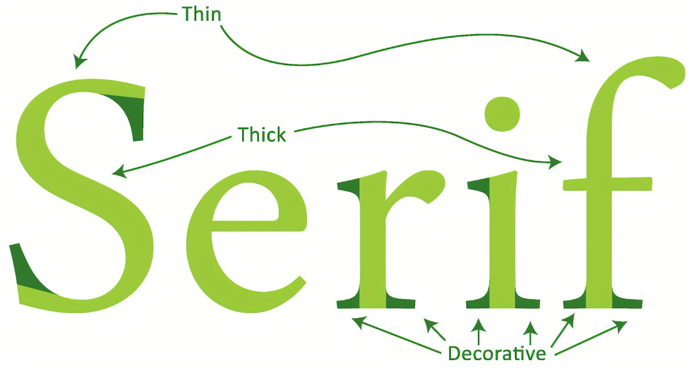

Hooray! I officially have the power of fonts on my side! Fun stuff. However, there is a question I would like to ask.
Does Comic Sans imply the existence of Comic Serif? (Apparently so, I just used it)
For context, the image below explains what serifs are:
Basically, anything dark green. If the font has the little protrusions, it is called a serif font. It is doesn't, it is called a sans-serif font. Very simple, yet unnecessary stuff. So, if there is a Comic Sans-Serif font, there should be a Comic Serif font, right?
So, now instead of using the basic default font that looks plain and boring, I can steal fonts from Google in order to make this site look PRETTY!!!!
My Kanban board finally got updated...